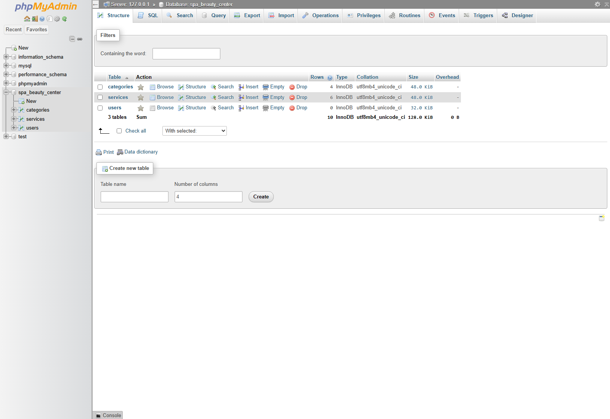
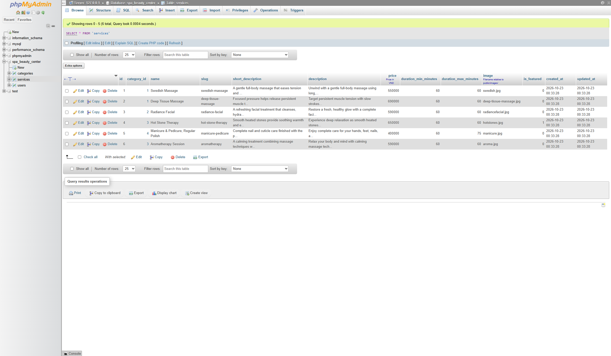
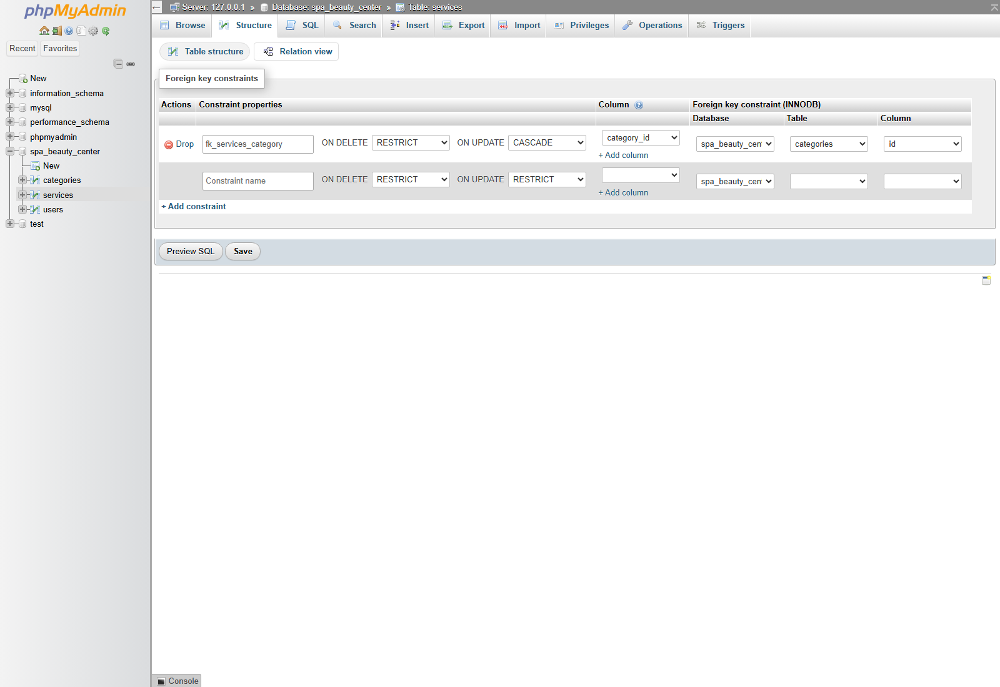

1. Database tables

2. Sample service records

3. Category relationship

services.category_id to categories.id: one category can contain many services.Lab 2 · Spa & Beauty Center Website
All three saved database-evidence screenshots are displayed below. Click an image to open it at full size.
These are saved Task 1 screenshots, not live database views. Later account or service changes may differ from these captures.



services.category_id to categories.id: one category can contain many services.